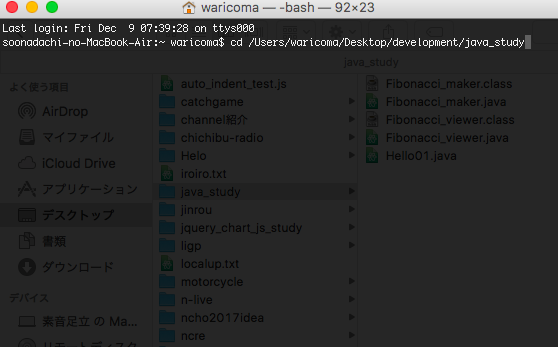
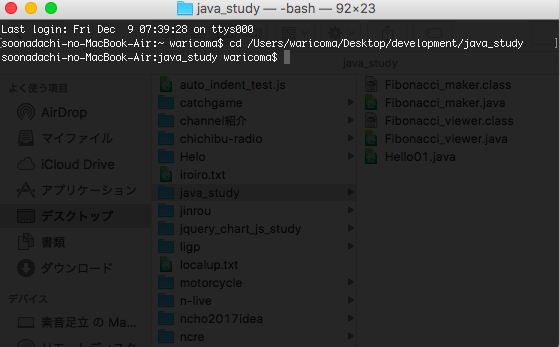
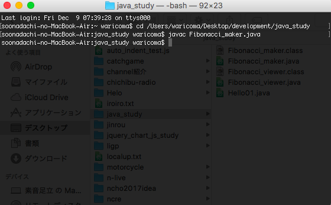
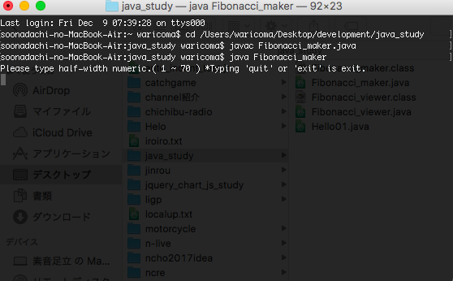
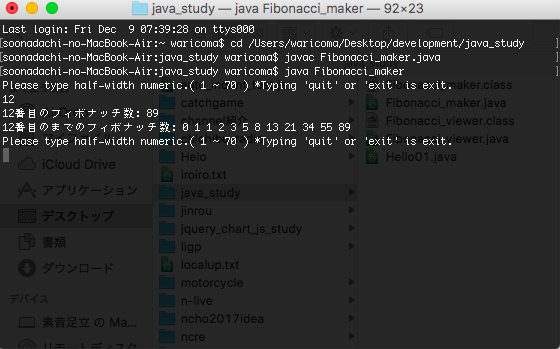

・ 過程
・ ざっくり
・ 起動方法等
・ おまけ
自分が手作業でフィボナッチ数列を求めるとき…
1つ前と２つ前の和をひたすら計算する
→ N番目のフィボナッチ数は(N-1)番目と(N-2)番目の和
これを自動化すれば完成すると思い…
long[] fibonacci_array = new long[ 70 ] ;
fibonacci_array[ 0 ] = 0 ; // 0 1 1 2 3 5 8 ...
fibonacci_array[ 1 ] = 1 ;
for ( int i=2; i<=70; i++ ) fibonacci_array[ i ] = fibonacci_array[ i-1 ] + fibonacci_array[ i-2 ] ;
このようなコード(Java)が完成しました。( 条件1 )
これでの変数iは
「N番目のフィボナッチ数は(N-1)番目と(N-2)番目の和」
でのNになり、
1,2番目を求める際には「(N-1)番目と(N-2)番目」が
それぞれ負の値になるので、
fibonacci_array[ 0 ] = 0 ; // 0 1 1 2 3 5 8 ...
fibonacci_array[ 1 ] = 1 ;
最初から設定しました。
後は、
「N番目のフィボナッチ数は(N-1)番目と(N-2)番目の和」
という計算を70番目まで繰り返させます。( 条件2 : 1/2 )
for ( int i=2; i<70; i++ ) fibonacci_array[ i ] = fibonacci_array[ i-1 ] + fibonacci_array[ i-2 ] ;
続いて入出力の部分を作ります。
そしてこの時点で
計算と入出力で
大きく2つに機能が別れてきたので、
2つのクラスを用いることにしました。( 条件3 )
コードを遡りやすいのでファイルも分けます。( 条件4 )
Fibonacci_maker.class
Fibonacci_viewer.class
終了するまで入出力を繰り返すので、
フィボナッチ数列は
その都度計算しないで予め計算して
おいた方が良いと思いました。
( 前述のフィボナッチ数列を記録している配列をそのまま用いる )
// Fibonacci_maker.java
Fibonacci_viewer Fibonacci_viewer = new Fibonacci_viewer() ;
Fibonacci_viewer.index( fibonacci_array , new BufferedReader(new InputStreamReader(System.in)) );
フィボナッチ数列などを渡す↓
// Fibonacci_viewer.java
class Fibonacci_viewer {
static void index ( long[] fibonacci_array , BufferedReader br ) throws IOException {
// input
// output
}
}
「終了するまで入出力を繰り返す」
ではwhile文…ではなく個人的に扱いやすいと思っている、
メソッドがメソッドを呼び出すことによる繰り返し
で実装しました。
// Fibonacci_viewer.java
class Fibonacci_viewer {
static void index ( long[] fibonacci_array , BufferedReader br ) throws IOException {
// input
// output
index( fibonacci_array , br ) ;
}
}
また、"quit" と "exit" で終了させます。
入力が "quit" と "exit" だったら ( 仕様3 )
System.exit( 0 );
を実行させます。( 仕様4 )
入力が数値ではなかったり1~70ではない
場合の処理も書きます。
// Fibonacci_viewer.java
class Fibonacci_viewer {
static void index ( long[] fibonacci_array , BufferedReader br ) throws IOException {
System.out.println("Please type half-width numeric.( 1 ~ 70 ) *Typing 'quit' or 'exit' is exit.") ;
String asked_numeric = br.readLine() ;
if ( asked_numeric.equals("quit") || asked_numeric.equals("exit") ) {
System.out.println( "See you." ) ;
System.exit( 0 );
}
try {
int asked_numeric_int = (int)Math.round( Double.parseDouble( asked_numeric ) ) ;
if ( 0 < asked_numeric_int && asked_numeric_int <= 70 ) {
// output
} else {
System.out.println("sorry... it's not 1 ~ 70.") ;
}
} catch (NumberFormatException e) {
System.out.println("sorry... it's not a half-width numeric.") ;
}
index( fibonacci_array , br ) ;
}
}
いよいよ出力部分を作ります。
例えば12と入力されたときに
12番目のフィボナッチ数: 89
12番目のまでのフィボナッチ数: 0 1 1 2 3 5 8 13 21 34 55 89
のような出力を行いたいので、
出力する文字列を記録する変数を用意します。
また、「12番目のフィボナッチ数: 」
の12は前述のコードより、
asked_numeric
「12番目のフィボナッチ数: 89」
の89は
fibonacci_array[ asked_numeric_int ]
に記録されているため、
String output_text = asked_numeric + "番目のフィボナッチ数: " ;
output_text += String.valueOf( fibonacci_array[ asked_numeric_int ] ) ;
となりました。
「12番目のまでのフィボナッチ数:」 の表示も一度改行させてほぼ同じように行います。
output_text += "\n" + asked_numeric + "番目のまでのフィボナッチ数:" ;
そして繰り返し文で ( 条件2 : 2/2 )
// for( int i=0; i<=asked_numeric_int; i++ ) output_text += " " + String.valueOf( fibonacci_array[ i ] ) ;
i = 0 ;
while( i <= asked_numeric_int ){
output_text += " " + String.valueOf( fibonacci_array[ i ] )
i ++ ;
}
半角スペースで区切って追記していきます。
出力します。( 仕様1 ) ( 仕様2 ) ( 仕様3 )
System.out.println( output_text ) ;
以上です。
ここまでお読みになって頂き有難う御座います。
最初にフィボナッチ数列を配列で管理して、
その配列を利用して入力された番号の
値等を出力します。
コードの読みやすや
簡素さ
などを今回は重視しました。
*恐らく Windows Mac 対応
ダウンロードしたzipファイルを解凍します。
ターミナルを開きます。
cd コマンドで解凍したファイルの場所へ移動します。


javac Fibonacci_maker.java
と入力(コピペ)しEnterを押します。

java Fibonacci_maker
と入力(コピペ)しEnterを押します。


プログラムが実行されるかと思います。
Included , Fibonacci